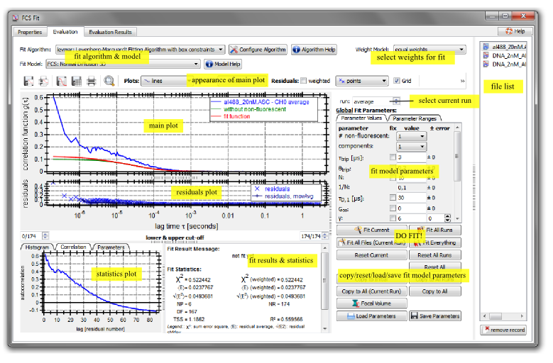
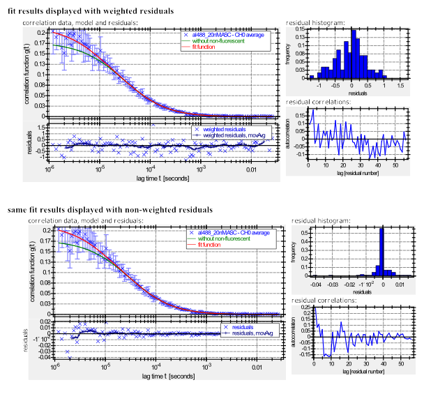

$$qf_commondoc_header.start$$ $$qf_commondoc_header.end$$
This page explains the elements of the user interface for imFCS curve fitting. Additional information may be found also in the section "$$qf_ui_eval_helpfiletitle$$". Also the user interface is mostly the same as for the FCS Curve Fitting Plugin. There is only one major difference between these two plugins: The FCS fit plugin stores the fit results for each run in a separate column/row/set of fit results, whereas this plugin creates one set for the average run and one set for all other runs. The fit results are then stored as vectors/matrices inside this set. This saves a considerable amount of memory in the project file and while QuickFit is running. Also it improves the speed of execution of the imFCS raw data record Plugin.
In order to create a new imFCS Curve Fit evaluation, you have to click on Data Items/Insert Evaluations/imagingFCS Curve Fitting in QuickFit's main window. Now a new entry under Evaluations has appeared in QucikFit's project tree. If you want to compare different fitting models, you can add more imFCS Curve Fitting objects, as described above. They will be completely independent. We can open the user interface of the fit window, by double-clicking the object in the project tree. You will see a screen like this after selecting the tab Evaluation (for informations on the other screens, see section "$$qf_ui_eval_helpfiletitle$$"):

This dialog is split up into several parts, which will be explained in more detail below. At the top of the dialog you can select the fit algorithm and fit model to use. On the right-hand side you can select one of the currently available FCS files from a list. In comparison to the FCS Curve Fitting Plugin each run represents the measurement on one pixel. The average run therefore usually is the average over all pixels. You can select the currently displayed run/pixel in the spin box at the top between the main plot and the file list. The main part of the dialog is made up of the correlation plot which also shows the current fit function. On its right you can edit the fit parameters and below the fit function plot additional fit statistics are displayed, that help you to evaluate the fit results. A set of buttons below the fit parameter list allow to perform fits and to interact with all fit parameters. The fit parameter widgets all have a context-menu which can be opened by right-clicking in them and which will offer additional possibilities.
The Basic Workflow
- Load the files you want to fit into QuickFit, add an FCS Fit evaluation object and open it.
- Select the fit algorithm and model you want to use.
- Select whether you want to use a weighted fit by selecting the weight model and where to take these weights from.
- Possibly cut some lag time channels from the fit to get rid of artefacts (detector afterpulsing, correlator imperfections, ...) in the ACF.
- Edit the (still initial) fit parameters, so they contain a reasonable guess, also fix parameters that you do not need and set the to their predefined values.
- Perform the fit.
- Check the results (fit statistics, inspection of residuals) and return to step 4 if needed. Note however, that after the first fit you won't edit the global paramaters anymore, but now edit the local paramaters. You can use the current values as global by right-clicking in a fit parameter field, or using one of the "Copy to ..." buttons below the fit paramaters. If you want to reset the current fit to the initial settings, click on "Reset current".
The User Interface components
Selecting the current file & run
Each raw data record is made up of a set of runs and an average over those runs (run -1). You can select the currently displayed file from the list on the rhs of the dialog and the currently displayed run from the spin box above the parameter widget. All functions like "fit current" work with the currently selected file and run. There are also some additional funktions that allow to e.g. it all runs from the current file or the current run in all files.
Fit Algorithm and Model
The main purpose of this dialog is to perform least-squares fits of certain model functions to experimentally acquired autocorrelation curves. In order to perform the fit, a variety of fit algorithms is provided. You can selectany of those from the drop-down box at the top of the dialog. You can also edit the fit parameter settings (usually the max. number of iterations and others) and look at the online-help entry for the fit algorithm, which should explain the parameters. The fit parameters (and also the selected algorithm) are specific to the evaluation item, so in order to compare different fit algorithm, you will have to add several FCS Fit evaluations to your project. In each you can choose the parameters independently. The same is true for the selected fit model. The drop-down box below the fit algorithm allows you to select any fit model which is applicable to imFCS data. As imagingFCS data usually have correlation functions for many pixels/runs, it is important to choose a fit algorithm that is at the same time fast and accurate. Usually the LMFIT Plugin is a good choice.
The main correlation plot
The left part shows the correlation curve from the currently selected data file, together with a fit and the residuals. Above the plot you may set several options for the appearance of the plots and also save the current plot to harddisk in different forms:
 will save a report containing the correlation curve plot, together with the fitparameters and all fit statistics to a PDF or PostScript file
will save a report containing the correlation curve plot, together with the fitparameters and all fit statistics to a PDF or PostScript file will print a report containing the correlation curve plot, together with the fitparameters and all fit statistics
will print a report containing the correlation curve plot, together with the fitparameters and all fit statistics will save a correlation curve plot to an image file (PDF, PostScript, PNG, SVG, ...)
will save a correlation curve plot to an image file (PDF, PostScript, PNG, SVG, ...) will save the data of the correlation curve plot to a text file (different formats) that can be read by other programs, like Matlab, Excel, Origin, ...
will save the data of the correlation curve plot to a text file (different formats) that can be read by other programs, like Matlab, Excel, Origin, ... will print the data of the correlation curve plot
will print the data of the correlation curve plot resets the zoom of the correlation curve plot to a setting where the complete curve is shown
resets the zoom of the correlation curve plot to a setting where the complete curve is shown
You may interact with the plot widget in several ways (zooming ...), that are described in section "Plot Widget Usage" in detail.
Data cut off
Below the plot you can set a cut-off from the data, to e.g. get rid of artifacts due to afterpulsing at the start of the correlation curve. These cut-offs are individual to each file/run combination. If you want to use a setting for all files and/or all runs, you may right-click in one of the two edit fields for the borders and select an according entry from the context menu that pops up.
Fit Parameters
On the right-hand side of the plots you find a list with all the parameters of the current fitting model and a set of buttons to control the fitting process. The parameter list contains two tabs, one displays the fit parameters together with the respective errors, the other allows to set the range for each parameter. Before a fit has been performed, the parameters are set to the global/initial values, after a fit the parameters are local. There is only one set of global parameters for every evaluation item, so when you edit them in one file/run, they will be changed for all files/runs, whereas when you edit the local parameters, they will only be edited for the current file/run. You may reset the current parameters to the global ones by clicking one of the "Reset ..." buttons. By right-clicking into any parameter edit field, you will get a comprehensive context menu that allows to copy the selected fit parameter to several places. You can e.g. copy the current local fit parameter value to the global parameters, or to all other runs in the current file. If you want to copy/reset/... all currently displayed fit parameters, you may use the buttons below the parameter list.
The buttons  allow you to save the current parameters to a text-file (*.fps) that can lateron be reloaded. This is a good tool, if you e.g. have a set of different initial values for several occasion (one could e.g. already set the correct blinking times for EGFP, whereas another sets the model to good initial values for fitting receptors on membranes...). These files will also save the fit parameter ranges, which parameters have been fixed and which model was used.
allow you to save the current parameters to a text-file (*.fps) that can lateron be reloaded. This is a good tool, if you e.g. have a set of different initial values for several occasion (one could e.g. already set the correct blinking times for EGFP, whereas another sets the model to good initial values for fitting receptors on membranes...). These files will also save the fit parameter ranges, which parameters have been fixed and which model was used.
Starting a Fit
There are several options to start fits. Either you use the buttons below the fit parameters, or the corresponding menu entries in the "Fit" menu. These possibilities are available:
 Fit Current: fit the currently displayed run only
Fit Current: fit the currently displayed run only Fit All Runs: fit all runs/pixels of the currently displayed file (also available in a multi-threaded version)
Fit All Runs: fit all runs/pixels of the currently displayed file (also available in a multi-threaded version) Fit All Files (Current Run): fit the currently displayed run/pixel in all files (also available in a multi-threaded version)
Fit All Files (Current Run): fit the currently displayed run/pixel in all files (also available in a multi-threaded version) Fit Everything: fit all runs in all files (also available in a multi-threaded version)
Fit Everything: fit all runs in all files (also available in a multi-threaded version)
The multi-threaded versions are available in the "Fit" menu only. They will start N threads in parallel and distribute the jobs over them. the maximum number of threads to use is configured in the general settings dialog.
Fit Statistics
Below the correlation curve and cut-off you will get additional statistics of the fit, which are a histogram of the residuals, the ordinal correlation of the residuals and a variety of other statistics values. See the page on "Explanation of Fit Statistics" for details on the math behind these parameters. The text widget on the right will also contain error messages or other outputs from the fit algorithm. The correlations should be more-or less flat (i.e. noise around 0). They usually help to better judge whether a systematic component is present in the residuals. The histogram shows the distribution of the residuals. A good fit should have a normal distribution centered around zero. Note however, that if the intrinsic uncertainties (errors) of the measured values are not gaussian, you may expect a different distribution, but still it should be centered around zero. On the third tab "Parameters" you can set the number of bins in the histogram. Here you can see a comparison of the statistics for weighted and non-weighted residuals for a good fit (1-component pure-diffusion):

You can see that in bot cases the residuals are dirstibuted around 0, but only for the weighted residuals we get a nice bell shaped distribution, as the errors for the different samples from the ACF do not all have the same absolute error, but the error depends on the value of the ACF and the lag time (see e.g. Koppel's formula). The correlation do not show large non-random deviations from 0 in both cases.
A second example shows typical residuals, histograms and correlations for a bad fit, where we tried to fit a 1-component-model to a sample with two components:
 Here the deviations can clearly be seen in the residuals, the correlations and also the shape of the histogram.
Here the deviations can clearly be seen in the residuals, the correlations and also the shape of the histogram.